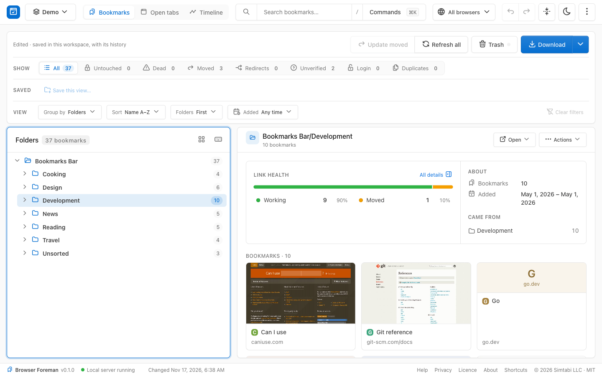

Browser Foreman
Browser Foreman
Clean bookmarks.
Safe tabs.
Finds duplicate and dead bookmarks, sorts them into folders, and saves your open tabs. Runs on your own computer.

Years of bookmarks, sorted out
Bring in every browser's bookmarks, see what is broken or repeated, and fix it in one place.
Bookmarks
- Duplicates folded into one
- The same page saved three ways becomes one bookmark. The copies wait in the Trash.
- Dead and moved links found
- Each link is checked once, politely, without your passwords. Moved pages get their new address.
- Sorted by your own rules
- File bookmarks into folders, preview the moves first, and undo any of it later.
Tabs and browsers
- Open tabs saved as they change
- After a crash, put every window back. Private windows keep only their count.
- Every browser in one tree
- Chrome, Edge, Brave, Vivaldi, Opera, Arc, Firefox and Safari, merged into one workspace.
- Written back when you choose
- Send the cleaned tree back to your browser through its extension, after a preview.
Your bookmarks stay on your computer. Nothing in your browser changes until you write it back, and every change can be undone.
Scriptable from end to end
- REST APIEverything the page does, under
/api/v1, with an OpenAPI document. - Events and webhooksEvery change as a Server-Sent Event, or a signed callback to your own URL.
- MCPYour assistant can search and read bookmarks. Writes stay off until you allow them.
$ browser-foreman serve Browser Foreman on http://127.0.0.1:8765 $ curl -N localhost:8765/api/v1/events \ -H "Authorization: Bearer $BROFO_TOKEN" event: bookmark.moved data: {"id":"b_41","title":"Go","from":"f_2","to":"f_9",…} event: link.checked data: {"url":"https://go.dev/doc/","status":"ok","previous":"dead"}
Up and running in a minute
Download
One binary for macOS, Linux or Windows. Then create its settings and a private token, once.
browser-foreman config initRun
Start the server. It listens on this computer only.
browser-foreman serveOpen
Import your browsers' bookmarks from the page.
http://127.0.0.1:8765To keep it running in the background, start it at login with browser-foreman service install.